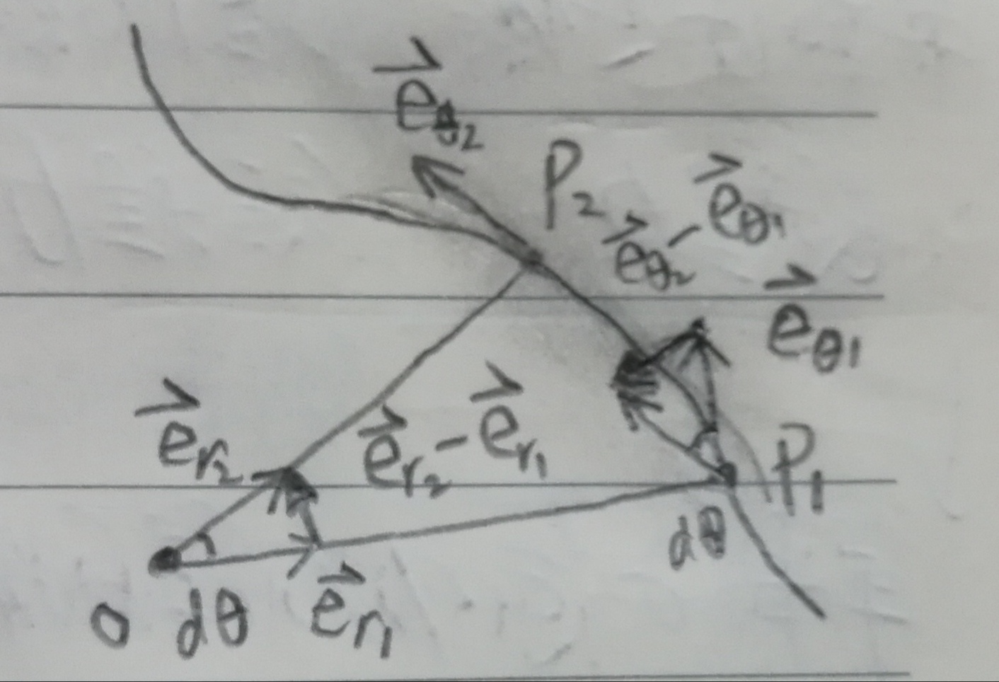

This note is focused on the area of vector field and tensor analysis. There are many coordinates in Physics, they are arranged in the many systems. The above ones we are going to talk are all limited to the three dimensional Euclidean condition(space dimension, time is not considered).
Derivatives in different coordinates
Polar coordinates
For the vector field in polar coordinate, such as the case of the equation of an elliptic ρ=ρ(θ). At the same time r,θ are also functions of time as r=r(t),θ=θ(t) .The directional vectors in radial and polar direction are changing with time.
Derivative of radia directional vector
dtder⃗=dtdθeθ⃗=ωeθ⃗
Full proof of this derivation reuquire analysis of micro geometry structure and detailed definition of the limitation.
dtder⃗=Δt→0limΔter2⃗−er1⃗=Δt→0limΔtΔl⃗=Δt→0limΔt∣er⃗∣Δθeθ⃗=dtdθeθ⃗=ωeθ⃗
Derivative of poloidal directional vector
dtdeθ⃗=−dtdθer⃗=−ωer⃗
The derivation process is very similar to the case above.
dtdeθ⃗=Δt→0limΔteθ2⃗−eθ1⃗=Δt→0limΔtΔs⃗=Δt→0limΔt∣eθ⃗∣Δθ(−er⃗)=−dtdθer⃗=−ωer⃗
{width=200px}
Author:
DocNan
Permalink:
https://docnan.github.io/2018/08/21/vector-analysis/
License:
Copyright (c) 2019 CC-BY-NC-4.0 LICENSE
Slogan:
我们的梦想是星辰大海！